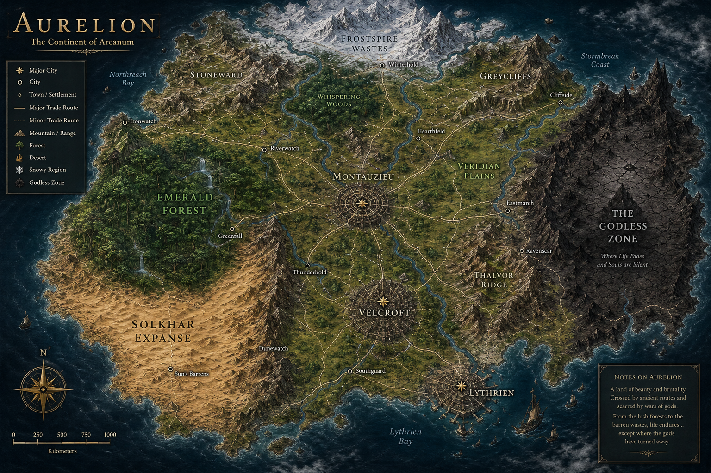

Myriad
Myriad


 Myriad
Myriad
View the lore and development progress of my fictional world.
In a world where nothing is ever truly lost, even death leaves an echo. The continent of Arcanum stretches vast and familiar—rivers carve through its lands, cities rise and fall like any other, and nature follows laws that seem unchanged. Lush forests breathe beside endless deserts, and towering mountains cast their shadows over civilizations that believe themselves alone at the top of the world. But beneath the surface of this seemingly ordinary world lies a hidden truth: the souls of the departed do not simply fade away.

The Soul is the absolute essence of a being. It contains everything that defines an individual as themselves. The Soul is spiritually unchanging in nature and stores identity, memory, personality. Contains the complete blueprint of the body (ideal form). The Soul does not naturally degrade or alter. All experiences are accumulated within the Soul. While “unchanging,” it can still be damaged through external corruption. The Soul Acts as a database that contains all the information about the person including memory, cognitive function, identity and the Soul's innate abilities (Soul Echo Art).
Every Arcanian is born with a Soul Frequency. A newborn or infant may possess a completely undeveloped or "blank" frequency. At the early stages of life, the Soul Frequency is naturally not fully Attuned with the soul. This means that the Soul Frequency still does not have access to some informations about the Soul, including Soul Echo Arts. The user must undergo self discovery to awaken and for their Soul Frequency to become Attuned with their Soul. When a person forms a clear sense of identity, their soul frequency becomes static and stable. Soul Frequency is the energetic signal that connects the Soul to the Body. It determines how the Soul is expressed in reality.It enables Decibel Output, Soul Echo Arts, memory access, and determines affinity and awakening of Soni. A stronger link is what allows the Soni to gain access to their Soul's innate power. Soul Frequency is dynamic and changeable, it can be tuned, distorted, stabilized.
The Body is the physical manifestation of the Soul. The Body anchors the Soul to the material world, without it, the Soul cannot directly interact with reality. It provides form, limitation, and presence. While the Soul defines what should be, and the Soul Frequency determines how it is expressed, the Body is what is currently realized. The Body does not perfectly reflect the Soul’s ideal blueprint. Instead, it is shaped by genetics, environmental influences, injury, trauma, and physical development. Because of this, it remains an incomplete realization of the Soul’s true form.
Arcanians are the people of Arcanum, a vast and unified continent where life is deeply intertwined with the unseen forces of the soul. Every Arcanian is born with what is known as a Soul Frequency, a unique, ever present resonance that links the Soul to the physical Body. It is as natural and essential as breath, quietly influencing how individuals perceive the world and how they are perceived in return.
The Soni are individuals born with a natural affinity to their Soul. A Sonus naturally has a stronger Soul Frequency than normal people. Though all people have Soul Frequencies, only the Soni can naturally attune to and wield them. Affinity is detectable even in children or infants. The Soni are also capable of Awakening a Soul Echo Art but it would require for the Soul Frequency to become fully Attuned to the Soul.
The Aphonoi Individuals with no affinity to their Soul. They possess a weak link to their soul and are incapable of accessing Soul Echo and Soul Echo Arts. The Aphonoi rely on Soul-infused weapons to combat Sonar Phantoms. Some Aphonoi rival Soni through exceptional training or combat skill. Although they generally live as normal citizens within society.
This is an unofficial term and is only mentioned locally by the people. This occurs when the subject's Soul Frequency becomes partially Attuned to their Soul. This stage means the subject's Soul Frequency can now access and translate the use of Soul Echo. However the subject's Soul Frequency still doesn't have access to the Soul's innate Soul Echo Art. Some Soni can get stucked in this stage, unable to Awaken their Soul Echo Art.
Awakening is the moment a Sonus fully realizes their self. This Occurs when the subject's Soul Frequency becomes fully in sync with the Soul. When a Sonus reaches Awakening, their Soul Frequency becomes fully Attuned to the Soul. Upon Awakening, the subject's Soul Frequency gains access to the Soul's innate Soul Echo Art.
Soul Echo Arts are the Soul's innate ability. Soul Echo Arts are directly derived from a Sonus’ Soul. They reflect who a person is, and is shaped by beliefs, values, emotions, and culture. Who a person wants to be may influence an Art only if it becomes part of their true self. Only when a Sonus' Soul Frequency becomes Fully Attuned with their Soul can they awaken their Art.
The Core cannot survive outside its Vessel, it would simply disintegrate into pieces. Upon death, some information of the Soul becomes ingrained on the subject's Soul Frequency. When a subject dies, their Soul dissipates and a portion of the their Soul Frequency is left behind. This Imprint can hold, emotions, feelings, memories or any information stored in their soul. These Imprints can bundle on each other and accumulate overtime, creating what is known as Corrupted Frequency.
Corrupted Frequency is also known as Noise Feedback. It is a chaotic bundle of multiple Soul Frequencies clashing against one another. Corrupted Frequency is not inherently evil, merely unstable and difficult to control. It is formed through excessive accumulation, decay, or unresolved remnants of Soul Frequencies.
Sonar Phantoms are the by-product of Corrupted Frequency. Sonar Phantoms are Soul Constructs made entirely out of Corrupted Soul Frequency. Corrupted Soul Frequency can accumulate overtime, becoming denser and denser. As it accumulates, it gains a form and access to the physical world. The informations attached to the bundles of Soul Frequencies give is partial sentiece, allowing it to have the capability to act on its own.
They say Arcanum was not always silent. Before the skies learned to dim, before the earth began to remember what it had buried, there was a voice. One that did not belong to man, nor god, but something far crueler. A presence that did not ask to be understood, only accepted. And when the world finally looked up, it was already too late to question why. The world endured.
Because somewhere beneath rotting soil and forgotten names, a sin was planted. Not a fleeting mistake, but a decision. A deliberate, desperate, and irreversible decision. Salvation was never meant to be free. It demanded a price measured not in gold, nor blood, but in something far more fragile. A thousand requiems were sung for a future that never seemed to arrive.
Time passed. The world healed. Or at least, it pretended to.
But fate has a way of remembering what people try to forget. From the void where even echoes die, something returns. It did not arrive as a savior nor as a god, but as a question left unanswered. A ghost that was never meant to live, yet never allowed to die.
The air grows heavy with something unseen. Whispers slip through the wind, not loud enough to be understood, but too persistent to ignore. Some hear them as warnings. Others, as opportunities. When a world begins to sing its elegy, it reveals what people truly are. Those who listen, and those who make themselves heard above the dying. And in the end, when the final note is sung.
Who will answer? And who will dare to sing louder?